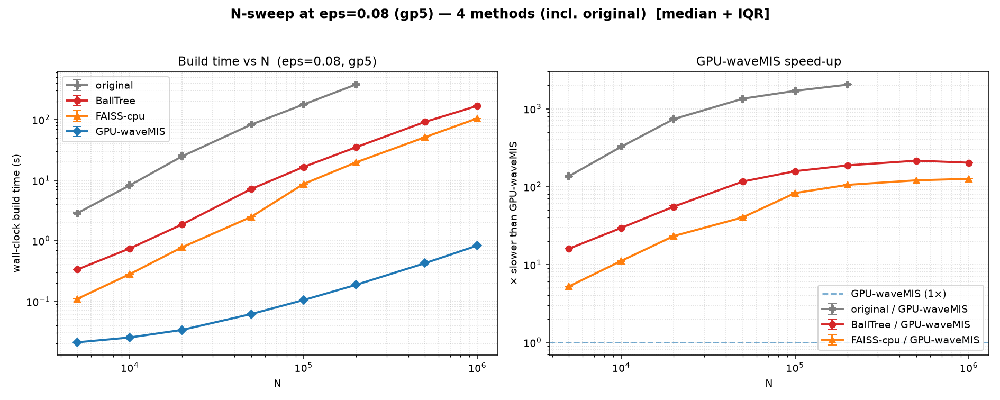
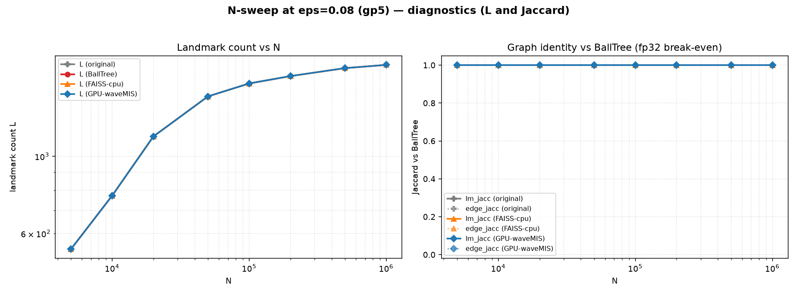
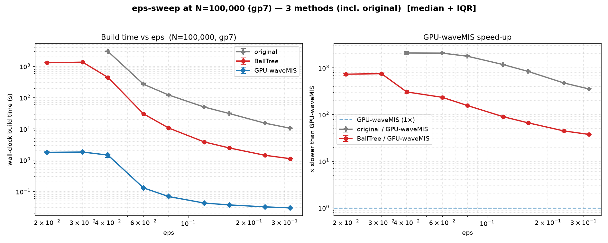
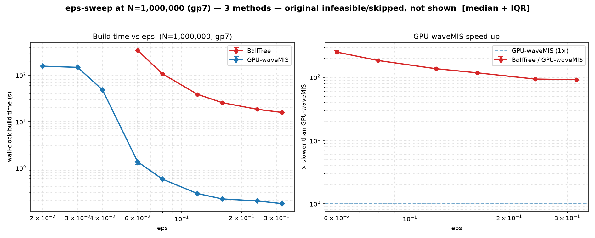
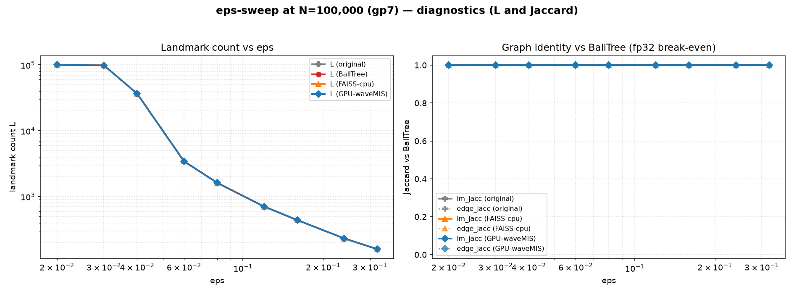
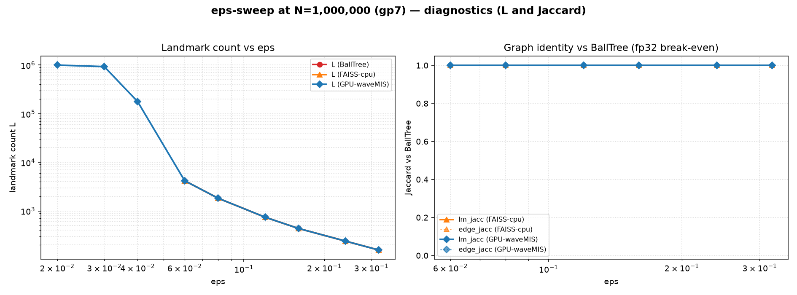

A logical comparison of pyBallMapper · BallTree · FAISS · GPU-waveMIS, backed by two measured sweeps (N-sweep · ε-sweep)
In one line. The real bottleneck of Ball Mapper is not distance computation but the serial dependency of landmark selection. pyBallMapper (naive), BallTree and FAISS all keep that selection loop serial and merely speed up the distance queries. GPU-waveMIS uses the equivalence “index-priority greedy selection = maximal independent set (MIS) on the ε-graph” to solve that selection as a parallel wavefront, removing the bottleneck itself. The result is the same graph as CPU BallTree (landmark & edge Jaccard = 1.0), while in the N-sweep (ε=0.08) it reaches up to ~200× over BallTree and does N=10⁶ in 0.85 s, and in the ε-sweep the speed-up grows as ε shrinks, hitting up to 2,224× over pyBallMapper and up to 773× over BallTree.
For data \(X=\{x_1,\dots,x_N\}\subset\mathbb{R}^D\) and radius \(\varepsilon\), Ball Mapper (Dłotko, 2019) — a single-resolution variant of Mapper (Singh, Mémoli & Carlsson, 2007) — builds a topological graph in three steps:
cov(u) ∩ cov(v) ≠ ∅ (they share a covered point).All four implementations compute the same mathematical object (a maximal ε-net + its nerve). They differ only in what they accelerate — and that is what decides performance.
All four target the same graph, but treat the distance query and the selection loop differently.
| Implementation | Built on | Distance query | Landmark selection | Hardware |
|---|---|---|---|---|
| original | pyballmapper (reference) |
brute force \(\mathcal{O}(N)\) (naive, no index) | serial greedy | 1 CPU core |
| BallTree | sklearn BallTree + joblib |
spatial index \(\mathcal{O}(\log N)\) query | serial greedy | multi-core CPU* |
| FAISS-cpu | FAISS IndexFlatL2 + range_search |
SIMD flat distance + radius search | serial greedy | CPU SIMD |
| GPU-waveMIS | gpu_ball_mapper.py (this work) |
batched GEMM (cuBLAS, Gram trick) | parallel wavefront MIS | GPU |
* BallTree parallelizes only the coverage/edge steps; selection stays serial. The point: original, BallTree and FAISS all accelerate the distance query while leaving the true bottleneck (serial selection) intact. Only GPU-waveMIS parallelizes that bottleneck.
The simplest, exact baseline. For each candidate it computes distances to all current landmarks in a serial Python loop → \(\mathcal{O}(N\cdot L\cdot D)\), all on one core. It is the correctness ground truth, but practically infeasible for \(N\gtrsim 2\times10^5\).
Accelerate the distance query via a spatial index (BallTree) or SIMD flat + radius search (FAISS, Johnson et al., 2019) → tens-to-hundreds× over naive. But the selection loop is still serial, so the serial wall re-emerges as N grows.
Step 1 (selection) is inherently sequential: whether point \(i\) becomes a landmark depends on every decision before \(i\) — so you cannot “compute everything first, then decide at once”. Measured on CPU, selection accounts for 68–76% of total time (coverage ~19%, tree build, etc.). However fast the distance query (BallTree, FAISS), without breaking the serial selection the ceiling is hard. This is exactly where GPU-waveMIS starts.
Define the ε-proximity graph \(G_\varepsilon\): vertices = points, edge \((i,j)\) ⟺ \(\|x_i-x_j\|\le\varepsilon\).
Why it parallelizes (wavefront). The “index-priority” rule can be applied simultaneously in rounds. Each round:
Justification.
Independence — two within-ε points \(i
Identity — both rules (serial and wavefront) enforce the same invariant (“select iff no selected neighbour of smaller index”), so the resulting sets are identical — which is why every measurement gives lm_jaccard = 1.0.
The gain: serial greedy needs \(\mathcal{O}(N)\) sequential steps, while the wavefront needs only \(\mathcal{O}(\text{number of rounds})\) parallel steps — usually far fewer than \(N\) (each round removes many points at once).
This “sequential-greedy = lexicographically-first MIS” view and its parallelizability are classical: parallel MIS goes back to Luby (1986), and Blelloch, Fineman & Shun (2012) proved that the sequential greedy MIS itself has only polylogarithmic dependence depth — i.e. it parallelizes — which is exactly the property the wavefront exploits. The leader/ε-net selection lineage traces to greedy farthest-first nets (Gonzalez, 1985). Full list in §11.
The implementation (gpu_ball_mapper.py) is a single unified 3-pass path that streams points in chunks.
Squared distance as an inner product: \[ \|a-b\|^2 \;=\; \|a\|^2 + \|b\|^2 - 2\,a^{\!\top} b. \] The inner products \(a^{\!\top}b\) between one chunk of points and all landmarks come from one matrix product (GEMM, cuBLAS) — the GPU’s strongest operation. No \(\sqrt{\cdot}\); compare against \(\varepsilon^2\).
Distances are translation-invariant, so subtracting the mean shrinks \(\|x\|^2\) and greatly reduces catastrophic cancellation near the boundary in the Gram subtraction. fp32 is required here — TF32 (10-bit mantissa) cannot resolve the \(\varepsilon^2\) boundary and produces an invalid net (so fp32 is the default; TF32 is opt-in with a warning).
Memory is \(\mathcal{O}(\text{chunk}\cdot L)\), compute \(\mathcal{O}(N\cdot L\cdot D)\) — scaling to \(N=10^6\).
Incidence matrix \(M\in\{0,1\}^{L\times N}\) (1 where a landmark covers a point). Then \[ S = M M^{\!\top}, \qquad S_{uv} = |\,\mathrm{cov}(u)\cap\mathrm{cov}(v)\,|. \] A nonzero off-diagonal entry ⟺ a shared covered point ⟺ an edge. Computed on-device with cuSPARSE SpGEMM (cupy), using int32/float32 to avoid overflow (with a scipy host fallback).
Hardware gp5 / RTX 3060, ε=0.08 fixed, 10-rep, bootstrap of a wine GC×GC-HRMS sample. Artifacts in n_sweep/.
At fixed ε, sampling the cloud ever more densely makes the landmark count \(L\) saturate toward the covering number (not linear: \(N\) grows 200× while \(L\) grows only ~3.4×, 541→1,832). So both CPU and GPU are roughly linear in \(N\), and the GPU’s huge parallel constant shows up as a ~200× saturating speed-up.
| N | original | BallTree | FAISS-cpu | GPU-waveMIS | vs orig | vs BT | vs FAISS | L |
|---|---|---|---|---|---|---|---|---|
| 5,000 | 2.92 s | 0.334 s | 0.110 s | 0.022 s | 132× | 15× | 5.0× | 541 |
| 20,000 | 24.77 s | 1.86 s | 0.780 s | 0.034 s | 720× | 54× | 23× | 1,141 |
| 50,000 | 82.89 s | 7.15 s | 2.49 s | 0.063 s | 1,323× | 114× | 40× | 1,487 |
| 100,000 | 178.3 s | 16.57 s | 8.66 s | 0.107 s | 1,675× | 156× | 81× | 1,620 |
| 200,000 | 380.1 s | 35.02 s | 19.66 s | 0.205 s | 1,853× | 171× | 96× | 1,701 |
| 500,000 | — | 91.89 s | 51.36 s | 0.446 s | — | 206× | 115× | 1,793 |
| 1,000,000 | — | 168.9 s | 105.1 s | 0.854 s | — | 198× | 123× | 1,832 |
original is \(\mathcal{O}(N\cdot L)\) and practically infeasible for \(N>2\times10^5\) → intentionally skipped (logged). This itself demonstrates the thesis that “naive does not scale”.


Hardware gp7 / RTX 5060 Ti, N=100k & 1M fixed, ε 0.32→0.02, 10-rep. Artifacts in eps_sweep/.
Two questions: (a) does “smaller ε → larger GPU speed-up” still hold at large N? (b) what does the regime where ε drops below the inter-point spacing and \(L\to N\) look like?
| ε | original | BallTree | FAISS | GPU | vs orig | vs BT | vs FAISS | L | E |
|---|---|---|---|---|---|---|---|---|---|
| 0.32 | 10.54 | 1.12 | 0.61 | 0.032 | 329× | 35× | 19× | 159 | 248 |
| 0.16 | 30.91 | 2.46 | 1.63 | 0.042 | 736× | 58× | 39× | 440 | 1,253 |
| 0.08 | 121.3 | 10.66 | 6.08 | 0.080 | 1,512× | 133× | 76× | 1,620 | 10,178 |
| 0.06 | 268.3 | 30.36 | 12.70 | 0.155 | 1,729× | 196× | 82× | 3,442 | 46,156 |
| 0.04 | 3,032.7 | 444.1 | 129.9 | 1.363 | 2,224× | 326× | 95× | 36,663 | 582,610 |
| 0.03 | — | 1,366.3 | 354.2 | 1.768 | — | 773× | 200× | 98,501 | 529 |
| 0.02 | — | 1,304.6 | 352.4 | 1.781 | — | 733× | 198× | 100,000 | 0 |
For ε≤0.04, \(L\) explodes to 0.18M–1M, so a single CPU baseline rep takes hours (ε=0.04 BallTree single rep observed at >2.3 h). They were intentionally skipped by an \(L\)-threshold and only the GPU was measured. The CPU baseline trend is already established through ε=0.06.
| ε | BallTree | FAISS | GPU | vs BT | vs FAISS | L | E |
|---|---|---|---|---|---|---|---|
| 0.32 | 15.74 | 6.03 | 0.174 | 90× | 35× | 157 | 301 |
| 0.16 | 25.59 | 16.49 | 0.219 | 117× | 75× | 437 | 1,233 |
| 0.08 | 106.6 | 68.56 | 0.592 | 180× | 116× | 1,832 | 21,093 |
| 0.06 | 342.8 | 157.2 | 1.294 | 265× | 121× | 4,190 | 157,569 |
| 0.04 | skipped | skipped | 47.86 | — | — | 177,735 | 13,046,815 |
| 0.03 | skipped | skipped | 146.5 | — | — | 932,005 | 196,426 |
| 0.02 | skipped | skipped | 156.4 | — | — | 1,000,000 | 0 |




Two independent correctness signals were used; they have different coverage, so it is worth being precise about where each applies.
No accuracy was lost for the speed-up, and no fp32 break-even (disagreement vs BallTree) was observed anywhere a comparison was possible — including across the \(L\to N\) degeneracy at N=100k.
Same data (N=100,000, ε=0.08), same coloring: the actual BallTree (CPU) and GPU-waveMIS Ball Mappers are shown side by side for one representative configuration (L=1,620, E=10,178, Jaccard=1.0) — this is a single illustrative case, not a per-sweep visualization. Hover/click nodes to confirm the two graphs are identical.
The GPU distance work is \(\mathcal{O}(N\cdot L\cdot D)\). When \(L\) saturates sublinearly in \(N\) (N-sweep: a fixed cloud sampled more densely), cost is roughly linear and the speed-up saturates near ~200×. Conversely, when \(L\) grows nearly linearly with \(N\) (the ε-sweep tail: genuinely new structure at every scale, \(L\to N\)), cost becomes nearly quadratic in \(N\) and the GPU rep itself grows (at N=1M: ε=0.04 47.9 s → ε=0.03 146.5 s → ε=0.02 156.4 s). Even there, the CPU baselines become hours (practically infeasible), so the GPU’s real advantage holds in both regimes. build_time_s and \(L\) tell you which regime you are in.
Short answer: the individual building blocks are all classical — but the specific synthesis, the reduction it rests on, and the validated artifact are a genuine (applied) contribution that fills a real gap. So it is plausibly publishable as an applied / software / systems result, but it is not a new parallel-algorithm in the theory sense. Below is the honest breakdown.
An HPC/algorithms reviewer would recognise every individual piece. None of the primitives is a new invention.
How to make a submission strong: (1) position explicitly against Bulauan–Manzanares (2026) — same problem, different (non-bottleneck) target; (2) report the \(L\to N\) regime honestly as a limitation (§9), where the GEMM cost turns ~quadratic; (3) include a real domain case study (the wine GC×GC-HRMS analysis) showing analyses that were previously infeasible; (4) an ablation separating the selection speed-up from the distance speed-up, to show the MIS parallelisation — not just “GPU distances” — is what removes the wall.
Links verified June 2026. R1–R2 define the method; R3–R5 are the selection/MIS lineage the wavefront rests on; R6 is the GPU-similarity baseline; R7 is the closest prior art on efficient Ball Mapper; R8 is GPU TDA for a different problem.
Generated: 2026-06-27 · Data: bootstrap of the AUS_FA_Ess_2007_2 wine GC×GC-HRMS sample ·
Hardware: FJFI gp7 (RTX 5060 Ti, ε-sweep) · gp5 (RTX 3060, N-sweep) · 10-rep measurements.
Implementations bundled here: gpu_ball_mapper.py (GPU-waveMIS), fast_ball_mapper.py (BallTree), pyballmapper (original). FAISS appears in this write-up only as a discussed CPU baseline / prior art — it is not bundled and not part of the benchmark or tests in this folder.
Raw data: n_sweep/, eps_sweep/ (each with repeat_results.json + tables/figures).